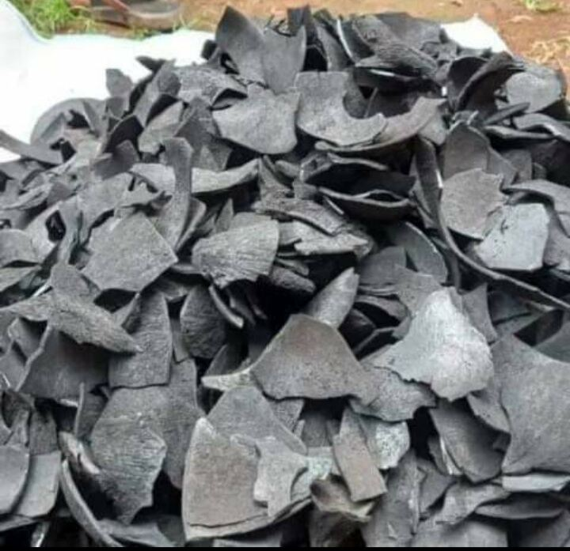

Deskripsi Tempurung Kelapa
Tempurung kelapa adalah lapisan keras yang melindungi daging kelapa, terletak di antara sabut (serat kelapa) dan endosperma (daging buah). Tempurung ini memiliki bentuk setengah bulat, dengan permukaan luar yang kasar dan berwarna coklat tua, sementara bagian dalamnya lebih halus dan berwarna coklat muda. Tempurung kelapa dikenal karena kekuatannya, sifatnya yang tahan lama, dan kandungan karbon yang tinggi. Bahan ini banyak digunakan dalam pembuatan arang, briket, karbon aktif, serta berbagai kerajinan tangan dan produk kosmetik. Tempurung kelapa juga ramah lingkungan dan banyak dimanfaatkan sebagai bahan baku alami dalam industri berkelanjutan.
Spesifikasi Tempurung Kelapa
- Nama Latin: Cocos nucifera
- Warna: Coklat Atau Kehitaman
- Bentuk: Setengah Bulat Tekstur Keras Dan Padat
- Kandungan Minyak: 70-80%
- Ukuran Rata-rata: 3-6 MM
- Kelembaban Maksimum: 12%
- Kegunaan: Arang Briket, Kerajinan Tangan, Dan Pengolahan Asap Cair
Manfaat Tempurung Kelapa
Tempurung kelapa memiliki banyak manfaat, seperti sebagai bahan bakar ramah lingkungan yang menghasilkan panas tinggi, arang untuk memasak dan penyaringan, serta pupuk organik untuk meningkatkan kesuburan tanah. Selain itu, ia juga digunakan dalam kerajinan tangan dan sebagai bahan baku industri, seperti serat dan biofuel. Dengan demikian, tempurung kelapa merupakan sumber daya yang multifungsi dan berharga.